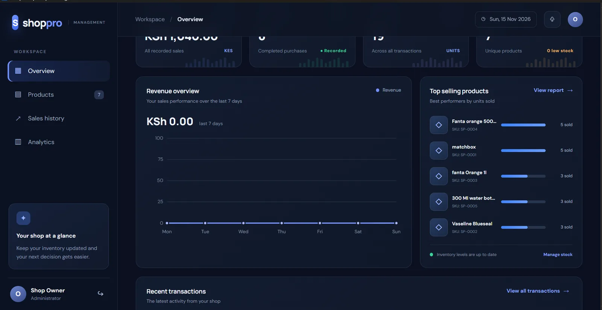

ShopPro Cloud
A shop-management application for organising products, sales activity and everyday retail workflows.
Live preview · active development


Direction
Project direction
ShopPro Cloud is an independent software product project. It explores how a retailer can manage catalogue information, sales activity and related operational records in one application. It is presented as product development, not as an external client delivery.
Product
Core product areas
- Inventory recordsProduct and stock information in one place.
- Cart & checkoutCustomer cart and checkout flow.
- ReceiptsReceipt generation for completed sales.
- ReportingSales history and basic reporting.
The project continues to evolve. Individual workflows and integrations should be considered complete only after they have been tested in the deployed environment.
Project information
- Project type
- Independent software project
- Technology direction
- Python · Flask · PostgreSQL
- Status
- Active development
Try the preview
The deployed build, running with test data.
Your business could run on a system like this.
Discuss a software project